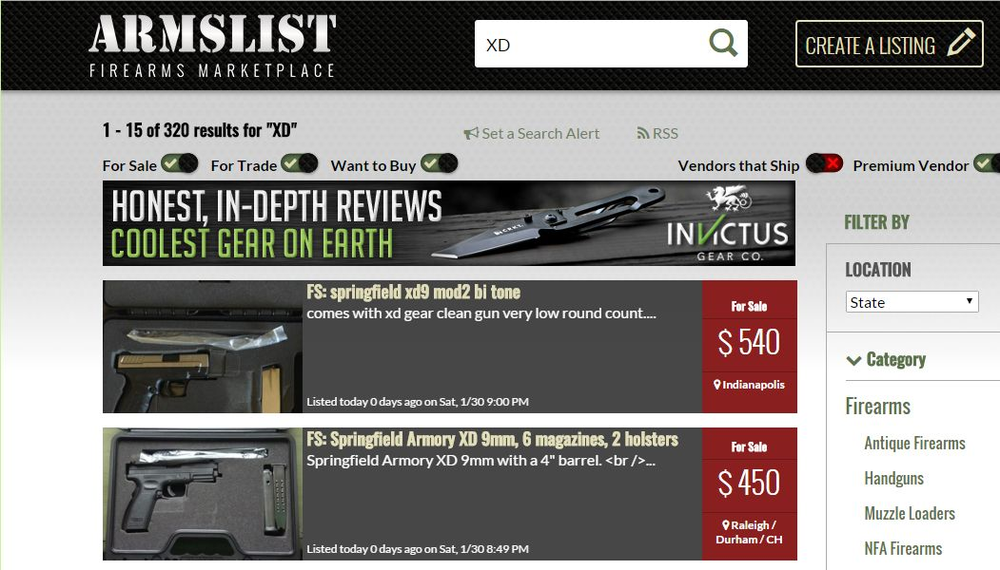

As a follow up to my previous post with guns I have for sale, I wanted to describe the process used to post guns for sale on the internet via Armslist.
{kind=link}
The process is very straight forward. First you have to prove you are human by entering text from an image. Next you enter a title, descriptive text and choose categories that describe the item for sale: manufacturer, caliber, action type, etc.. The next page lets you upload 3 photos. The final page asks you to agree to the terms of Armslist. All done.
The ads are free and will stay posted for 100 days.
Lessons Learned:
- You do not need to include contact info in the text of the ad. The “Contact Seller” button will supply your email address to interested buyers.
- Unless you are paying for the ad, no HTML markup is allowed. My first attempt was rejected as the Armslist software tagged the description as having HTML. I was a bit confused as there was no HTML markup. I removed the semicolons from the ad and was able to proceed.
- The first photo uploaded is displayed with the ad in the search results. For the XD9, I had a photo that was taller than it was wide. It was a photo of the open gun case with accessories at the top and the gun and magazines at the bottom. Armslist cropped the photo to just show the top part so only the accessories were displayed. I made some adjustments to the first image then replaced it to show the gun with the search results.
What about the legalities of selling a gun?
I’m not a lawyer, I’m not in the business of selling guns for profit. However, after President Obama’s recent press conference about his actions to address gun violence, I’ve had several people ask me whether buying and selling guns on the internet is legal.
Private party sales incorporate background checks by requiring the same paperwork required for a retail sale. In North Carolina that is either a Pistol Purchase Permit (PPP) OR a Conceal Handgun Permit (CHP). The seller is required to collect the PPP or the CHP number and retain this with the record of the sale. To obtain either a PPP or a CHP, the purchaser went through a background check.
Is is possible to find sellers that do not require this paperwork? It might be but it seems unwise of the seller. If the gun is later used in a crime and you have no proof of a legal sale, you would be putting yourself in a bad situation. So most sellers will absolutely require the accepted permits.